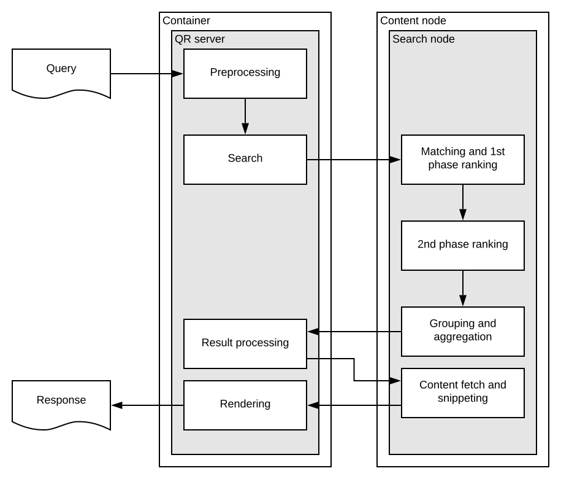
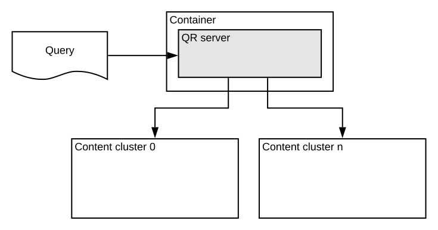
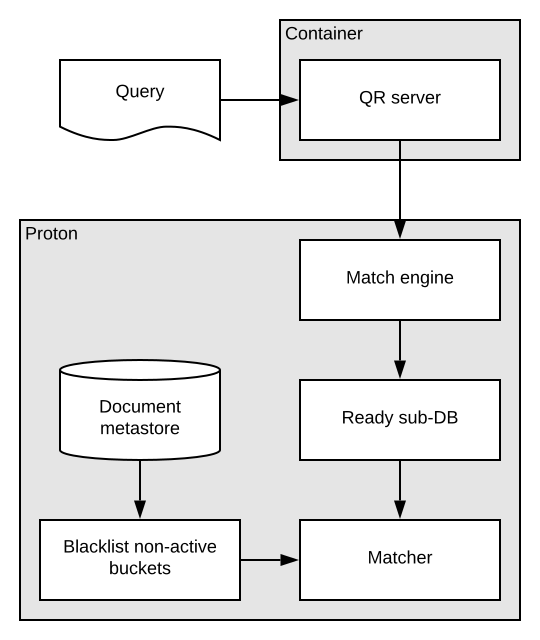

---
# Copyright 2017 Yahoo Holdings. Licensed under the terms of the Apache 2.0 license. See LICENSE in the project root.
title: "Querying Vespa"
---
Search request are sent to the Vespa search API
and queries are written in YQL.
The following diagram illustrates the components and data flow for Vespa queries.

Query Flow
A query is executed in two main phases:
- The search phase which does matching, ranking and grouping/aggregation.
This phase involves dispatching the query to content nodes
- The result processing phase which involves content fetching and snippeting of the top global hits
found in the previous search phase
The above is an simplification - if the search request also specifies result grouping,
the search phase might involve multiple phases or roundtrips between the container and content nodes.
Search phase
-
A query is sent from a front-end application to a container node over HTTP(s) using GET or POST
using the search API or in any custom request format handled by a
custom request handler,
which translates the custom request format to native Vespa APIs.
-
Query pre-processing, like linguistic processing
and query rewriting,
is done in configured search chains
-
The query is sent from the container to
selected content clusters -
see federation for more details.
The illustration above only contains one content cluster but multiple is fully supported
and allows scaling document types differently.
For example a tweet document type could be indexed in a separate content cluster
then user document type which allow for independent scaling.

-
At this point the query enters one or more content clusters.
In a content cluster with grouped distribution,
the query is dispatched to one group at a time using a dispatch policy,
while with a flat single group content cluster the query is dispatched to all content nodes.
-
The query arrives at the content nodes which performs matching,
ranking and aggregation/grouping over the set of indexed documents
in the Ready sub database:
The vespa-proton process performs matching over the ready and indexed documents
and performs ranking as specified with the request/document definition.
Each content node matches and ranks a subset of the total document corpus
and returns the top k hits along with meta information
like total hits and sorting and grouping data if requested.

-
Once the content nodes within the group has replied within the timeout,
results are returned to the search container for search phase result processing.
Only the targeted number of hits is returned.
In this phase, the only per hit data available is the Vespa internal global document id (gid) and the relevancy score.
In addition there is result meta information like coverage and total hit count.
Additional hit specific data like the contents of fields is not available
until the result processing phase has completed the content fetching.
Result processing (fill) phase
-
When the result from the search phase is available,
a custom chained searcher component
can process the limited data available from the first search phase
before contents of the hits is fetched from the content nodes.
The fetching from content nodes is lazy and is not invoked before rendering the response,
unless asked for earlier by a custom searcher component.
-
The container will ask the content nodes which produced the best hits from search phase for the contents of the fields,
only fields in the requested document summaries is fetched.
The summary request goes directly to the content nodes that produced the result from the search phase.
-
After the phase is completed against the content nodes, the complete result set might be processed further
by custom components (e.g doing result deduping, top k re-ranking),
before finally rendering the response.